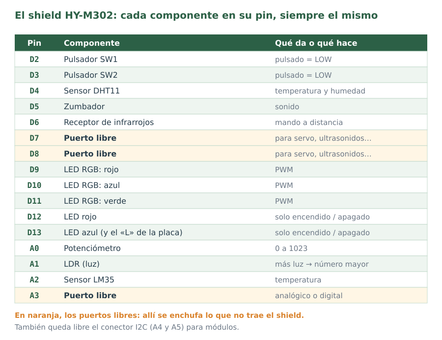

Material de consulta para estudiar y para trabajar en clase. En el examen no se puede usar.

Órdenes de Arduino
| Orden | Qué hace | Ejemplo |
|---|---|---|
pinMode(pin, modo) | Dice si un pin es salida (OUTPUT) o entrada (INPUT). En setup(). | pinMode(12, OUTPUT); |
digitalWrite(pin, valor) | Pone una salida a 5 V (HIGH) o a 0 V (LOW). | digitalWrite(12, HIGH); |
digitalRead(pin) | Lee una entrada digital: HIGH o LOW. | int p = digitalRead(2); |
analogRead(pin) | Lee una tensión de 0 a 5 V y da un número de 0 a 1023. Si lees dos entradas seguidas, haz antes una lectura de descarte de cada una. | int luz = analogRead(A1); |
analogWrite(pin, valor) | PWM de 0 a 255, solo en los pines con ~. | analogWrite(9, 128); |
delay(ms) | Espera los milisegundos indicados. | delay(1000); |
map(x, a, b, c, d) | Pasa x del rango a…b al rango c…d (enteros). | map(v, 0, 1023, 0, 180) |
Serial.begin(9600) | Abre el monitor serie. En setup(). | |
Serial.println(x) | Escribe x en el monitor y salta de línea. | Serial.println(luz); |
tone(pin, Hz) / noTone(pin) | Hace sonar o calla el zumbador. | tone(5, 1000); |
El servo y los ultrasonidos
#include <Servo.h>
Servo barrera;
barrera.attach(A3); // en setup()
barrera.write(90); // ángulo de 0 a 180digitalWrite(TRIG, HIGH);
delayMicroseconds(10);
digitalWrite(TRIG, LOW);
long t = pulseIn(ECHO, HIGH, 30000);
float d = t * 0.0343 / 2; // centímetrosEl motor con el driver L293D
| IN1 | IN2 | Motor |
|---|---|---|
| HIGH | LOW | un sentido |
| LOW | HIGH | el otro sentido |
| iguales | iguales | parado |
La velocidad se da con analogWrite(EN, 0…255), con EN en un pin con ~ (en los ejemplos, el 5).
Estructuras
if (condición) {
…
} else if (otra) {
…
} else {
…
}
for (int i = 0; i < 10; i = i + 1) {
…
}
while (condición) {
…
}| Compara | Une condiciones |
|---|---|
== != < > <= >= | && (y), || (o), ! (no) |
Fórmulas
- Lectura → voltios:
v = lectura * 5.0 / 1023 - Distancia con ultrasonidos: d = t · 0,0343 / 2 (t en µs, d en cm)
- LM35: grados = voltios · 100 · TMP36 (Tinkercad): grados = (voltios − 0,5) · 100